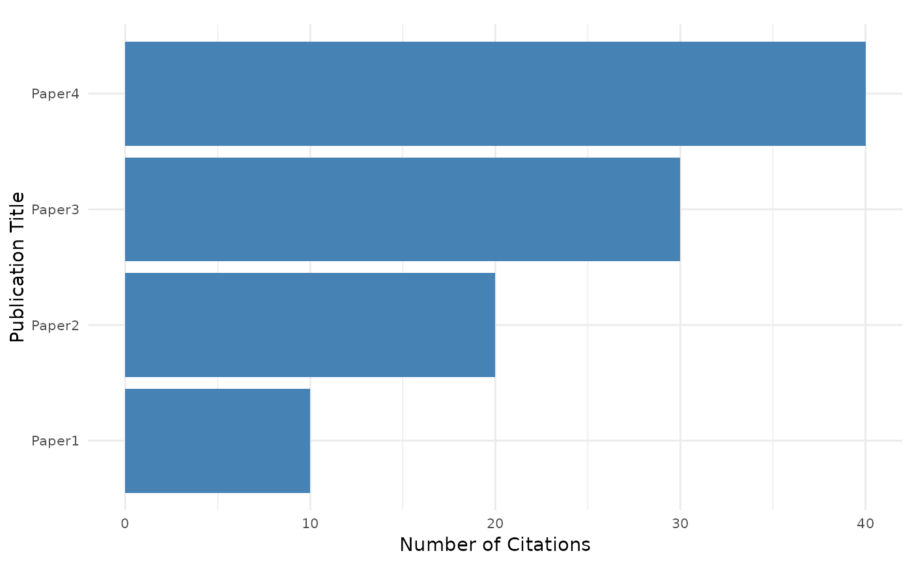
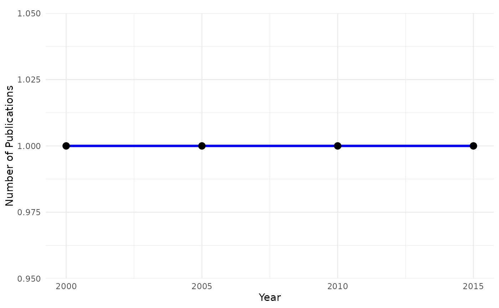

Plot various metrics (citations, publications, or h-index) for a scholar's profile.
Usage
plot(x, y, ...)
# S4 method for class 'ScholarProfile,ANY'
plot(x, y, type = c("citations", "publications", "h_index"), ...)Examples
scholar_profile <- new("ScholarProfile", publications = data.frame(citedby = c(10, 20, 30, 40), year = c(2000, 2005, 2010, 2015), title = c("Paper1", "Paper2", "Paper3", "Paper4")))
plot(scholar_profile, type = "citations")

plot(scholar_profile, type = "publications")
#> Warning: Using `size` aesthetic for lines was deprecated in ggplot2 3.4.0.
#> ℹ Please use `linewidth` instead.
#> ℹ The deprecated feature was likely used in the CiteAnalyzer package.
#> Please report the issue at
#> <https://github.com/danymukesha/CiteAnalyzer/issues>.

plot(scholar_profile, type = "h_index")
#> Error in year <= yearly_data$year[i]: comparison (<=) is possible only for atomic and list types